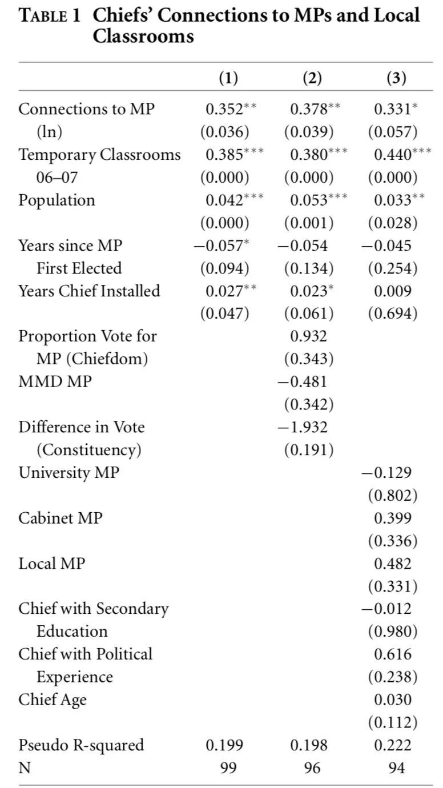
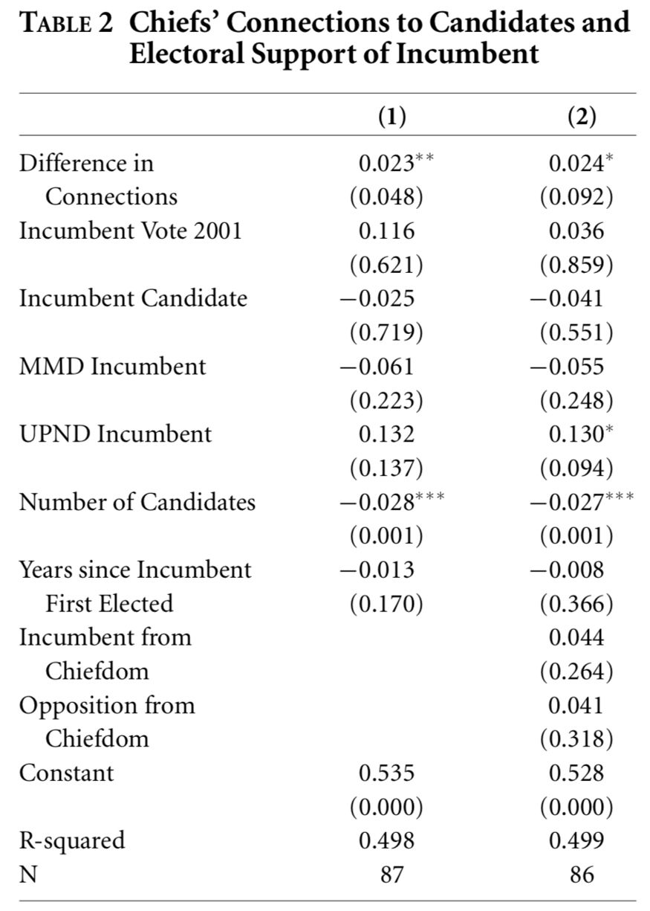
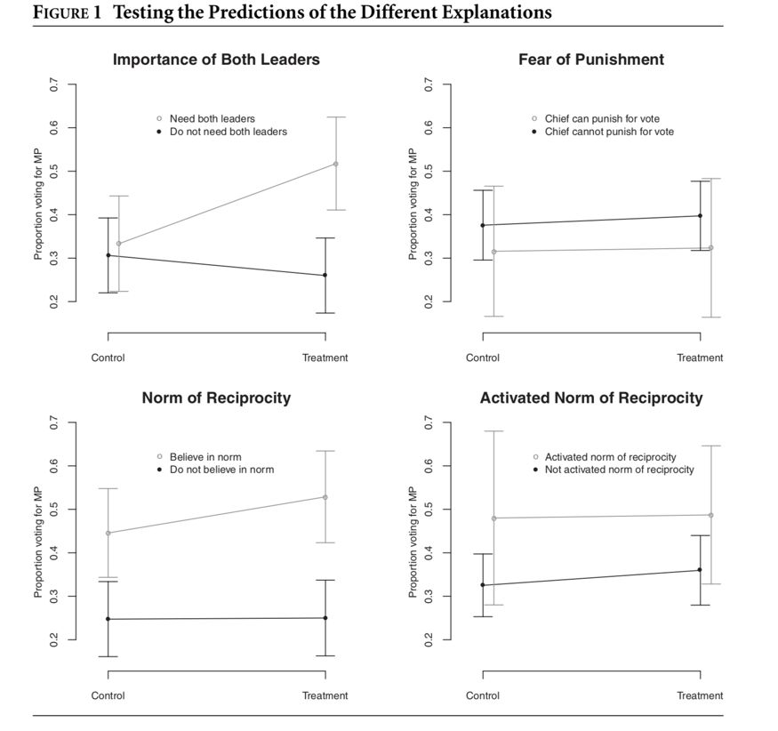

收录于合集
#比较政治学 121 个
#国家建构与国家发展 70 个
#民主与民主化 34 个
文献来源：Baldwin, K. (2013). Why vote with the chief? Political connections and public goods provision in Zambia. American Journal of Political Science , 57(4), 794-809.
作者简介：Kate Baldwin，耶鲁大学政治学系副教授，研究方向为非洲国家构建与政治发展。
一、导言
在发展中国家的选举中，地方精英会对选举产生何种影响？对阿根廷(Stokes 2005)、塞内加尔(Schatzberg 2001)的研究显示，贿选和顺从巩固了地方的侍从主义(Clientelism)。一些学者强调投票过程中的缺陷让地方精英能够监视投票行为并根据人们的投票选择施加惩罚(Brusco, Nazareno, and Stokes 2004; Medina and Stokes 2007)。还有学者强调人们对于地方精英个人的义务和忠诚(Auyero 2000; Lemarchand and Legg 1972; Scott 1972)。所有这些理论中，投票者都是出于非政治性原因给地方精英所支持的候选人投票，因此这样的行为被认为损害了投票过程的公正。这篇文章则认为，投票者之所以偏好地方精英所支持的候选人，是因为他们认为与地方精英有更好政治联结的候选人能够更有效地给地方提供公共产品。因此，选民投票给地方精英所支持的候选人很可能是基于自身利益所作出的理性选择，他们并没有被强迫去投票给那些他们认为会有差劲绩效的候选人。
二、 解释地方精英选举影响的绩效理论
在许多发展中国家中，选民们更关心政客给地方带来公共物品的能力而不是他们全国性政策议题的立场(Kitschelt 2000; Wantchekon 2003)。尤其是在政府行政能力较弱，无法直接给基层输送资源的情况下。在这种情况下，政客们能否成功回应基层需要主要取决于他们与地方恩庇人（patrons)合作的能力。而所谓的恩庇人指的就是那些基于其在基层社会和经济结构中的核心地位而处于实际领导地位的非选举地方精英(Scott 1972)。在不同国家中，这些恩庇人的头衔也有所不同，在撒哈拉以南的非洲主要指的就是传统政治领导人，即“酋长”。这些内嵌于基层的恩庇人既有能力也有动机去联结选民和政客，成为地方的掮客。
政客提供公共物品的绩效往往要取决于他和地方恩庇人的关系。如果他们之间的关键较差，那么在共事的过程中就可能面临较高的交易成本，相反，如果双方合作较为默契那么当地公共物品提供的能力可能也较强。在选民无法直接选举或更换地方恩庇人却能够自由选择候选人的情况下，他们更有可能投票给和地方恩庇人关系更密切的候选人，通常也就是地方恩庇人所支持的候选人。这一解释与Keefer &Vlaicu(2007)的观点也很相似，用他们的说法就是，和恩庇人的政治联结让候选人能够对选民作出胜选后提供公共服务的可信承诺。
三、赞比亚的政客与酋长
作者主要基于赞比亚的案例来验证上述理论。在撒哈拉以南的非洲，赞比亚较早开放了多党选举，距本文写作之时（2007-2008年）已经进行了5次全国性大选，其选举也相对较为公平、自由。根据宪法，酋长不允许参与选举，但对地方的社会经济生活具有较大影响力。同时，赞比亚也是一个典型的拥有脆弱行政部门的新兴民主国家。在议会选举中，有150名议员通过单一议席选区制产生。议员被期望能通过对各个部长的游说为当地带来项目或利用自己所掌握的发展基金为当地带来资源。此外赞比亚的政党也较为脆弱，政党竞争往往围绕对资源的再分配而不是纲领性的政策。三个主要参与选举的政党都成立于1990年之后，没有明显的意识形态基础且在不举行选举的时候不存在地方组织。赞比亚的乡村共有286个酋邦，每个酋邦都有一个终身制的酋长所领导。根据非洲晴雨表的调查，大约三分之二的人都承认自己很信任酋长。脆弱的行政部门、脆弱的政党体系加上具有竞争性的选举体系给候选议员们带来了很大压力，与酋长合作似乎是他们唯一的选择。因为酋长不仅能够地方性知识，还用于他们所急缺的组织性力量。
三、 酋长和议员政治联结的政治效用
作者通过实地调查、政府普查数据以及选举数据对自己的理论进行了实证检验。为了测量酋长和议员之间的政治联结，作者提出的问题是：“与该议员第一次见面距今已经有多少年了”。因变量则为2007-2008学年当地公立学校的教室数量。控制变量中既有涉及议员个人特征的变量（如第一当选距今的年数、受教育程度、党派），也有涉及酋长个人特质的变量。在所有三个模型中，酋长与议员的政治联结都与当地的公共物品提供呈现显著的正相关关系。回归分析的结果如下：

接下来，作者又分析了这种政治联结对于选举结果的影响。自变量为酋长和现任议员的相识年数减去酋长与反对派议员的相识年数，从而测出酋长与不同议员政治联结的差异。因变量为现任议员的得票率。经过OLS回归，这种政治联结的差异同样与现任议员得票率呈现显著正相关关系。具体回归结果如下：

为了进一步分析酋长如何影响选民的投票选择，揭示其作用机制，以及排除竞争性解释，作者又采用了实验法。作者要将作为实验对象的群众随机分为了解酋长和候选议员政治联结的和不了解双方政治联结的，从而测试这种政治联结的影响并分析其影响机制。
在实验设计的过程中为了避免民众已经知悉酋长对于候选人的看法。首先，这一实验是在议会任期中间进行的，因为临选举时酋长会公开表明其倾向。其次，用于实验的村落其议员都处于自己的第一任期，避免酋长和议员之间已经有过一次顺利的合作阶段。为了避免所选取的村落对实验结果的影响，作者分别选取了酋长权力较为分散和酋长权力较为集中的两个村落，在两个村落各选取了192个具有代表性的成年人作为样本。
接着作者对被试者进行了调查。被试者要回答酋长对当地的发展是否重要，以及议员对当地的发展是否重要。认为两者对当地发展都很重要的占43%，认为只有其中一方重要或双方都不重要的占57%。这一问题被用来测量选民是否认为酋长和议员的合作对于公共物品的提供十分重要。这也是这篇文章的基本观点。
除了本文的解释外，对于投票者跟随酋长投票的行为还有两种竞争性解释。一是认为酋长会对那些不按要求投票的人施以惩罚，即暴力说；第二种解释认为给酋长所支持的候选人投票是对酋长平时帮助的回报，即互惠说。为了检验暴力说，被试者被要求回答是否会因为自己的投票而遭到酋长的差别对待，其中只有20%的人认为这是有可能的。为了验证互惠说，被试者被要求看一个图片，其中的人拿到了地方酋长赠予的礼物并被要求给酋长支持的候选人投票，被试者被问到是否这个人有义务给该候选人投票。其中有44%的被试者认为这是可能的。这种方式能够验证人们是否支持一般性的互惠准则，为了检验被试者是否实际上有过类似经历，作者进一步追问在过去一年内被试者是否得到了酋长的帮助，其中有17%的人得到了帮助，这部分人被认为在实际上支持互惠准则。
基于实验法的共变分析如下图所示。在知晓酋长倾向的实验组，认为酋长和议员合作对于当地发展很重要的被试者给按照酋长倾向投票的可能性相对于控制组大大提高了。在实验组中，认为酋长和议员合作很重要的被试者根据酋长倾向投票的可能性更是远远高于认为双方合作不重要的被试者。可见这一机制的影响力。而根据其他两种假说所得出的结果却并没有呈现出这样清晰明显的解释力：

四、结论
这篇文章的研究发现，地方恩庇人的选举影响并不总是让选民违背自己的政治利益。选民给恩庇人支持的候选人投票很有可能是基于自己的深思熟虑。这是因为，在弱国家的情景下，与地方恩庇人有更好政治联结的候选人更有可能给当地带来更多公共产品。作者认为，未来的研究可以关注在何种情况下恩庇人的政治影响力会消失。如果从这篇文章来看的话，大概只有政府能够直接且公正的提供公共产品，而不是通过恩庇人提供公共产品时，地方恩庇人影响选举的情况才会逐渐削弱。
编译：赵德昊 审校：杨端程 编辑：康张城
【政文观止Poliview】系头条号签约作者